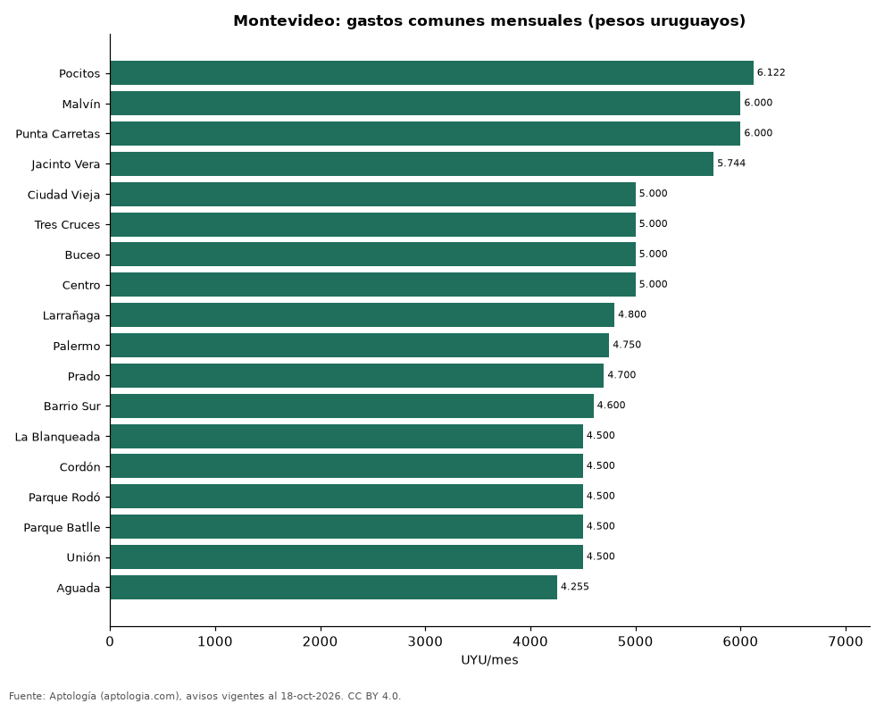

Gastos comunes en Montevideo por barrio: cuánto suman al alquiler (octubre 2026)
Estudio con datos abiertos (CC BY 4.0). Versión original: https://github.com/elbroker/aptologia-datos/tree/main/estudios/gastos-comunes-montevideo-por-barrio-2026 · DOI: 10.5281/zenodo.23481449
En Montevideo los gastos comunes de un apartamento en alquiler son en la mediana 5.000 pesos uruguayos (USD 124) al mes, el 15,7 % del alquiler. El barrio con los gastos comunes más altos es Pocitos (6.122 pesos uruguayos (USD 152)) y el de los más bajos, Aguada (4.255 pesos uruguayos (USD 106)).
Resumen: analizamos 2.656 avisos de alquiler en pesos uruguayos que declaran gastos comunes, en 18 barrios con 30 avisos o más.
Actualizado: 18 de octubre de 2026 (datos del 18 de octubre de 2026) · Próxima actualización: mensual.

Resumen
| Indicador | Valor |
|---|---|
| Gastos comunes (mediana) | 5.000 pesos uruguayos (USD 124) |
| Sobre el alquiler | 15,7 % |
| Más altos | Pocitos: 6.122 pesos uruguayos (USD 152) |
| Más bajos | Aguada: 4.255 pesos uruguayos (USD 106) |
Gastos comunes por barrio
| Barrio | Gastos comunes (mediana) | Alquiler (mediana) | Gastos comunes / alquiler | Avisos |
|---|---|---|---|---|
| Pocitos | 6.122 pesos uruguayos (USD 152) | 36.500 pesos uruguayos (USD 908) | 16,7 % | 318 |
| Malvín | 6.000 pesos uruguayos (USD 149) | 36.000 pesos uruguayos (USD 895) | 17,1 % | 151 |
| Punta Carretas | 6.000 pesos uruguayos (USD 149) | 39.000 pesos uruguayos (USD 970) | 15,6 % | 120 |
| Jacinto Vera | 5.744 pesos uruguayos (USD 143) | 32.000 pesos uruguayos (USD 796) | 18,7 % | 32 |
| Ciudad Vieja | 5.000 pesos uruguayos (USD 124) | 28.000 pesos uruguayos (USD 696) | 16,6 % | 92 |
| Tres Cruces | 5.000 pesos uruguayos (USD 124) | 30.000 pesos uruguayos (USD 746) | 16,2 % | 203 |
| Buceo | 5.000 pesos uruguayos (USD 124) | 32.000 pesos uruguayos (USD 796) | 14,6 % | 79 |
| Centro | 5.000 pesos uruguayos (USD 124) | 29.000 pesos uruguayos (USD 721) | 17,1 % | 276 |
| Larrañaga | 4.800 pesos uruguayos (USD 119) | 28.500 pesos uruguayos (USD 709) | 16,7 % | 32 |
| Palermo | 4.750 pesos uruguayos (USD 118) | 29.200 pesos uruguayos (USD 726) | 15,7 % | 70 |
| Prado | 4.700 pesos uruguayos (USD 117) | 29.000 pesos uruguayos (USD 721) | 16,2 % | 43 |
| Barrio Sur | 4.600 pesos uruguayos (USD 114) | 30.000 pesos uruguayos (USD 746) | 14,7 % | 64 |
| La Blanqueada | 4.500 pesos uruguayos (USD 112) | 29.900 pesos uruguayos (USD 744) | 15,4 % | 227 |
| Cordón | 4.500 pesos uruguayos (USD 112) | 29.900 pesos uruguayos (USD 744) | 15,0 % | 357 |
| Parque Rodó | 4.500 pesos uruguayos (USD 112) | 32.000 pesos uruguayos (USD 796) | 12,9 % | 72 |
| Parque Batlle | 4.500 pesos uruguayos (USD 112) | 29.800 pesos uruguayos (USD 741) | 15,4 % | 84 |
| Unión | 4.500 pesos uruguayos (USD 112) | 27.250 pesos uruguayos (USD 678) | 15,2 % | 54 |
| Aguada | 4.255 pesos uruguayos (USD 106) | 26.000 pesos uruguayos (USD 647) | 15,7 % | 74 |
Medianas de avisos en pesos uruguayos (los avisos en dólares se excluyen).
Preguntas frecuentes
¿Cuánto son los gastos comunes en Montevideo? 5.000 pesos uruguayos (USD 124) al mes en la mediana, el 15,7 % del alquiler (octubre de 2026).
¿Dónde son más caros los gastos comunes? En Pocitos: 6.122 pesos uruguayos (USD 152) al mes en la mediana.
Metodología
- Fuente: exportes nocturnos de la base de datos de Aptología (aptologia.com) del 18 de octubre de 2026: avisos vigentes de vivienda en portales inmobiliarios de 13 países, recogidos por Aptología y vistos en línea entre el 11 y el 18 de octubre de 2026. Corte: 18 de octubre de 2026.
- Depuración: se eliminan duplicados exactos (misma ciudad, zona, tipo, precio, moneda, área, habitaciones y baños) y los precios fuera del percentil 1–99 de cada país, operación, moneda y tipo; el precio por m² usa solo avisos con área declarada entre 12 y 2.000 m² y también se recorta al P1–P99.
- Qué se mide: precios pedidos (publicados), no precios de cierre. En arriendo, el canon mensual sin administración, gastos comunes ni condominio.
- Muestra mínima: cada cifra publicada se apoya en al menos 30 avisos; las celdas con menos se omiten.
- Monedas: nunca se mezclan avisos de monedas distintas sin convertirlos. Conversión a dólares con la tasa de mercado de ExchangeRate-API (open.er-api.com, actualización del 18 Oct 2026): 1 USD = 3.182,80 COP, 1 USD = 18,47 M.N, 1 USD = 5,09 BRL, 1 USD = 3,44 PEN, 1 USD = 982,44 CLP, 1 USD = 1.514,57 ARS, 1 USD = 40,20 UYU, 1 USD = 5.705,37 PYG, 1 USD = 61,27 DOP, 1 USD = 0,89 EUR, 1 USD = 11,72 BOB; la UF chilena a 41.178,64 CLP (mindicador,cl. 18-oct-2026). Los avisos publicados en dólares se usan tal cual.
- Moneda: solo avisos de alquiler en pesos uruguayos (la mayoría); los avisos en dólares se excluyen y nada se promedia entre monedas.
- Gastos comunes: valor mensual declarado en el aviso; se descartan valores nulos o mayores que el alquiler.
- Limitaciones: la cobertura depende de los portales que recorre Aptología en cada país y es mayor en las ciudades grandes y en los segmentos medio-alto y alto; el área es la que declara el aviso, sin verificar; los nombres de zona vienen de los portales.
- Privacidad: solo se publican agregados; no se publica ningún dato personal, enlace a avisos ni nombre de anunciante.
- Datos abiertos: datos.csv, licencia CC BY 4.0.
Cómo citar
Pinzón Pineda, D. M. (2026). Gastos comunes en Montevideo por barrio: cuánto suman al alquiler (octubre 2026). Aptología (aptologia.com). https://github.com/elbroker/aptologia-datos/tree/main/estudios/gastos-comunes-montevideo-por-barrio-2026. Datos: datos.csv, licencia CC BY 4.0.